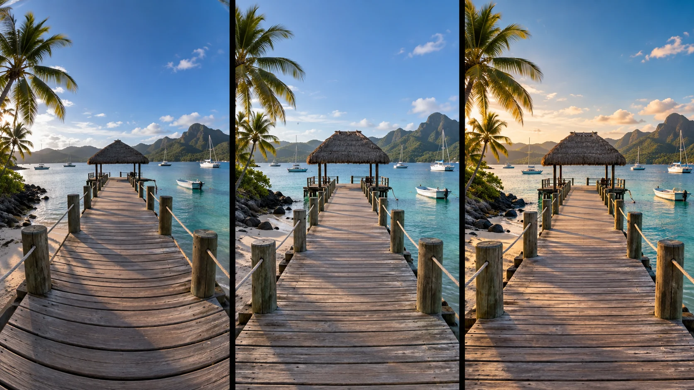

G13 · 중급 · 일반 드론
Koh Yao Noi: 여행 영상의 광각 왜곡과 질감
어안 왜곡 보정으로 잃을 수 있는 가장자리와 색보정 여유를 촬영 구도에 반영한다.
그림에서 확인할 세 가지렌즈 특성과 후반 여유를 함께 계획한다.
1휘어 보이는 부두 선
왼쪽 부두의 널빤지와 난간이 화면 가장자리에서 휘어 보이는 부분을 본다. 중앙의 정자와 주변 배가 차지하는 폭도 함께 확인한다.
2곧아진 선과 좁아진 가장자리
가운데는 부두의 선이 더 곧아지고 정자가 크게 보인다. 왼쪽과 비교해 가장자리 배와 주변 물가가 얼마나 화면에 남았는지 살핀다.
3따뜻해진 색과 대비
오른쪽은 부두와 정자에 따뜻한 색이 더해진다. 직선의 형태를 바꾸는 보정과 표면의 분위기를 바꾸는 색보정을 따로 비교한다.
촬영 설계
촬영을 이렇게 설계한다
렌즈 특성을 기록한다
Bloom은 주로 넓은 화각의 액션카메라 영상과 평탄한 프로파일을 사용했다고 밝혔다. 렌즈의 휘어짐과 후반 색 변환을 예상한 원본이라는 점을 제작 정보로 읽을 수 있다.
보정 범위를 구분한다
제작자 설명은 After Effects의 광학 보정으로 어안 왜곡을 제거하고 별도 도구로 색보정했다고 명시한다. 또한 젤로 문제를 언급하므로 왜곡 보정과 진동 문제를 같은 것으로 보면 안 된다.
교육 적용 · 가장자리를 남긴다
부두와 수평선의 직선을 기준으로 보정 전후를 비교한다. 중요한 인물을 화면 끝에 두면 보정 과정에서 잘릴 수 있으므로 필요한 여백과 최종 화면 비율을 함께 검토한다.
Philip Bloom이 태국 코야오노이 여행 중 섬과 부두 주변을 공중에서 기록한 작품이다.
원본 영상Koh Yao Noi: 여행 영상의 광각 왜곡과 질감
1. 직선의 형태
원본에서 부두나 건물처럼 직선인 물체를 찾는다. 가장자리의 휘어짐이 표현 의도인지 보정할 왜곡인지 질문한다.
2. 가장자리 정보
보정 전후 시연이 있다면 화면 끝의 사물과 남은 영역을 비교한다. 직선을 펴면서 중요한 정보가 사라지는지 판단한다.
3. 결함의 종류
재생 중 색·왜곡·떨림을 나누어 관찰한다. 서로 다른 현상을 한 가지 후반 효과로 모두 설명하지 않는다.
재생이 제한되면 원본 영상 새 창을 이용하세요.
공식 소개 · 한국어 요약
촬영 조건과 후반 보정의 공개 범위를 읽는다
촬영과 보정
Philip Bloom의 Vimeo 소개는 GoPro의 평탄한 프로파일과 주로 넓은 화각을 사용했으며 후반에서 어안 왜곡 제거와 색보정을 했다고 밝힌다.
촬영 문제
촬영 중 젤로 문제도 있었다고 직접 언급한다.
학습안 범위
현재 그림의 보정 단계는 가상 설명이며, 실제 원본을 대조해 보정량이나 잘린 영역을 확인한 결과는 아니다.
Kling 프롬프트단문 인과 체인 · 16:9
내가 직접 만들어 본다
광각에서는 가장자리일수록 선이 휘고 주제가 늘어나며 중앙에서는 바르다는 위치 관계를 지시한다.
- S01바닷가 부두 끝에 작은 정자가 있다.
- S02정자 옆에 한 사람이 서 있다.
- S03영상은 하나의 연속 쇼트다.
- S04처음 10초 동안 부두와 사람이 화면 왼쪽 가장자리에 있다.
- S05가장자리에서는 널빤지와 난간이 휘어 보인다.
- S06사람의 몸도 가장자리에서는 옆으로 늘어난다.
- S07다음 10초 동안 드론은 천천히 왼쪽으로 옮겨 간다.
- S08드론이 옮겨 가기 때문에 부두와 사람이 중앙으로 들어온다.
- S09중앙에 오자 널빤지와 난간이 곧게 펴진다.
- S10마지막 10초 동안 사람은 중앙에서 제 모양으로 선다.
- S11그 결과 휘어짐은 가장자리에서만 생긴다.
[네거티브]
- 부두가 사라지고 육지만 보이는 것 금지
- 사람이 여러 명으로 늘어나 구도가 복잡한 것 금지
- 영상 중간에 컷이 들어가 장면이 끊기는 것 금지
- 부두와 사람이 처음부터 화면 중앙에 있는 것 금지
- 널빤지와 난간이 처음부터 곧은 직선인 것 금지
- 사람의 몸이 가장자리에서도 정상 비율인 것 금지
- 드론이 제자리에서 회전만 해 위치가 그대로인 것 금지
- 부두와 사람이 가장자리 밖으로 더 밀려나는 것 금지
- 중앙에서도 난간이 계속 휘어 있는 것 금지
- 사람이 중앙에서도 비틀린 모양인 것 금지
- 휘어짐이 화면 전체에 고르게 퍼지는 것 금지
결과에서 볼 것
- 왼쪽 가장자리에서 선이 휘고 사람이 늘어나 보였는가
- 드론 이동으로 중앙에 오자 선이 곧아졌는가
- 휘어짐이 가장자리에서만 일어났는가